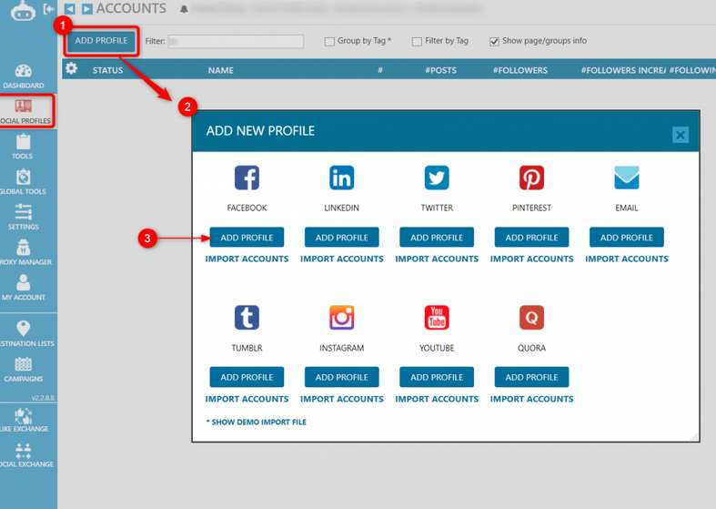
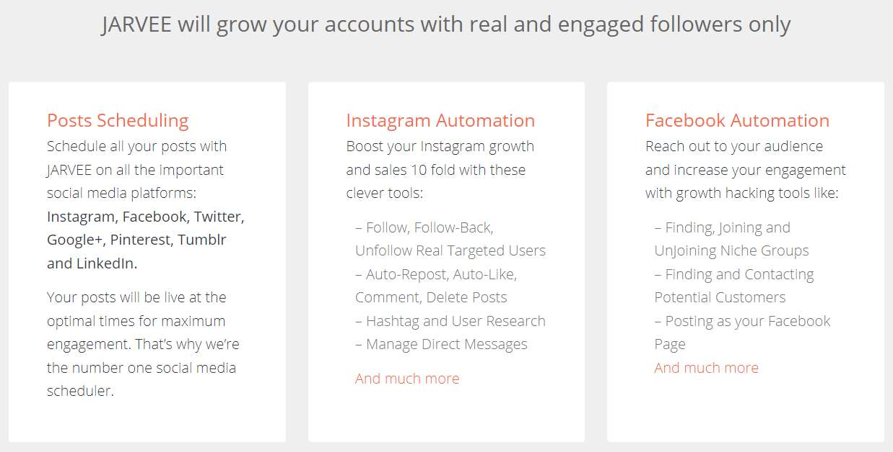
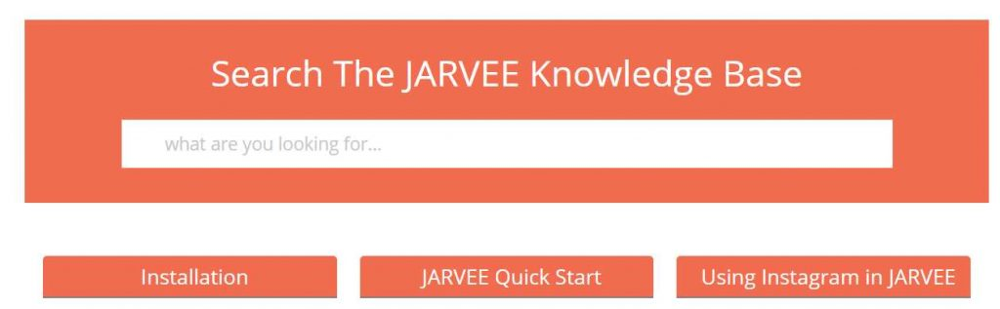

In this Jarvee review, we’ll be answering the question, “Is Jarvee Worth It?” and walk you through how the tool works, its features, and if there are any better alternatives.
Continue reading to learn if Jarvee is the right Instagram tool for you.
What is Jarvee?
First things first, Jarvee is a Windows-based Instagram automation software. You download it, install it, and use it on your computer like any other computer program.
When activated, Jarvee can complete a wide range of tasks on your behalf, making it easier for you to grow your Instagram account.
Many marketers swear this is the best tool for social media marketers. One thing you need to know is Jarvee works with many other social media platforms too, not only Instagram.
Our Recommended Tools:
I would like to take a moment to recommend our top recommended Instagram tools. For a full list of our best tools, take a look at this article:
Upleap
Upleap is a really cool Instagram automation tool because they hire real people to work on your accounts for you. It doesn’t use any bots or scripts. Most social media marketers like Upleap because it’s much safer than other Instagram automation tools.
KENJI
Another tool we recommend is Kenji, the world’s best Instagram bot. Unlike Upleap, Kenji is an Instagram bot, but it uses AI to complete daily tasks on your account. Although it is a bot, it’s one of the safest ones out there, and you can customize the speed and settings to avoid any risks.
Getting back to our Jarvee review…
How Much Does Jarvee Cost?
Currently, Jarvee offers a free 5-day trial with no credit card required. If you want to purchase the product after the trial, there are three payment plans to choose from:
- Starter ($29.95/month)
- Regular ($49.95/month)
- Professional. ($69.95/month)
For most people, the Starter membership is more than enough, although it does limit you to 10 social accounts. Nevertheless, that’s plenty!
Is Jarvee Easy to Use?

I’ll be honest, Jarvee does have a learning curve. They have so many features and options!
So if you’re not the most tech-savvy, there is a learning curve, and you’ll probably have to spend some time watching their tutorials to figure things out.
The good news is they have plenty of introductory tutorials, including videos on how to add social accounts, add target sources, recommended speed/limits, and whatnot.
Overall, the program has a learning curve, but if you take the time to figure things out, it should help with your marketing efforts.
Adding a Social Media Account:
The first thing that you’ll need to do is add a social media profile. To do this, click on the social profile tab, then add a profile, and follow the on-screen prompts.
Currently, Jarvee works with the following platforms:
- Google Plus
- Tumblr
In this Jarvee review, we will focus on Instagram features. The available tools will vary depending on the social media platform you use.
Jarvee’s Features:

Jarvee does have a lot of features and customization options. We won’t be discussing every single feature here, but we will cover the most important ones.
Inside the software, these features can be found in the tools menu. You’ll also see all the features that are available for your given social media profiles. You can toggle the services in this section too.
What You Need to Know:
Before getting into the features, there are a few things you need to know about this tool.
Remember, Jarvee is a bot. So to avoid the risk of being banned, it’s recommended to use a proxy whenever you use the software. You can use the software without a proxy, but if you want to connect multiple social media profiles, a proxy is highly recommended.
Another point to keep in mind is, do you need to download this program, install it, and have it open in order for it work on your behalf? It’s not one of those online-based tools that will run in the background. You have to have the program open on your computer to use the features.
Now let’s look at the features.
Follow and Unfollow
Jarvee can automatically follow and unfollow accounts from your Instagram account (and most other social media platforms) based on your target settings. The follow tab has a wide range of options, and you’ll have to manually configure each one. What I like about this feature is you can customize the time and limits of almost every action.
For example, you can tell the tool to follow 2 or 10 people at a time, set a limit on the max followed accounts a day, set an amount to increase each day, randomize active times, and more.
You can also add more criteria such as whether or not the accounts have a profile picture, a bio, or uploaded something within a certain time frame. There are over 20 user-filters you can add.
Follow sources allows you to create criteria for the bot when searching for accounts to follow. For example, you can choose to follow people by keyword search, by friends of targets, by people from a list, and much more.
There’s also a night mode. With night mode, the campaigns will pause during specific hours. You can also enable randomize night-mode.
In other words, the follow tool is very in-depth and you can customize almost every little detail. It’s always great to have the option to change the settings on the follow tools, so you can make sure the bot isn’t performing to many actions on your account.
Adding Destinations
The destination service is quite useful because it sends content from one platform to multiple other destinations.
For example, if you publish something on your Instagram, you can create a destination to send that post to other platforms, such as a Facebook page, Facebook group, and whatnot. It makes sharing content over a network of profiles and platforms much easier.
Schedule Posts
if you’re away from your computer or you just want content coming out on a daily basis, scheduling posts can be incredibly helpful. With Jarvee’s post scheduling feature you can not only schedule regular Instagram posts but also stories. Very useful.
Another feature that is similar to this one is called Auto Re-post, automatically copies posts from other profiles and uploads them on your profile.
Personally, I don’t like the idea of posting content that is not original, but many social media marketers base their entire business on re-posting content.
Automatically Leave Comments
One more feature is the ability to leave custom-written comments on popular posts. You can choose to either rotate between a list of pre-written comments or use the spin Syntax to spin each comment into an original comment.
Personally, I think the spin Syntax makes a lot of mistakes, so if you value your brand’s reputation, I would go with the pre-written messages.
After Follow
Jarvee has a cool feature called After Follow which tells the bot what to do after you successfully follow an account.
There are several actions you can add here, but most people will settle for the Like Users Latest Post function. Here is a list of some of the other possible actions:
- Set a number on how many posts to like.
- Like a random post.
- Leave a comment on the latest post.
- Send a direct message.
- Mute user.
- Remove if the follow back ratio is lower than a certain amount.
- And much more.
As you can see, there are quite a few ways we can use this feature for marketing online.
Auto-Send and Manage Direct Messages with Jarvee
Jarvee makes it easy for you to quickly reach out to new fans by auto sending direct messages.
The messages can be triggered a couple of ways. For instance, someone follows your account or someone sends you a message. You can also choose to automatically send people you follow messages.
The cool part is the software makes it really easy for you to manage messages as well.
You can delete undesirable messages, quickly reply to questions, and manage all of your conversations from your computer. No need to tire out your fingers tapping on a phone!
Jarvee’s Downsides:
Although Jarvee is one of the better social media management tools we reviewed, there are a few downsides worth talking about.
Learning Curve, Not Easy to Use 👎
For starters, there is a steep learning curve. Almost every feature has multiple tabs with settings and values you can change. Figuring out the best values for each setting is challenging!
So don’t feel bad if you can’t make sense out of all the menus and tabs right off the bat. Luckily, the company does have plenty of video tutorials to walk you through the initial steps.
Although the high level of customization is good in some ways, it also comes with some risks. For example, if you enter an extra zero or forget to add appropriate limits, Instagram might ban you.
There are no built-in limits, so your account could follow thousands of people in a matter of minutes, which will definitely set off some alarm bells.
In short, you need to be careful with your configurations. And remember to use a proxy!
Only Compatible with Windows Operating System 👎
For the people who use Macs for most of their work, I have some bad news. Unfortunately, Jarvee is only compatible with Windows.
Although that might seem like a deal-breaker, it is possible to install and run Jarvee on a Virtual Private Machine. Instructions on how to do that can be found here. But that’s another expense to add to the bill.
Make Sure You Have Enough Power: 👎
Another thing to keep in mind is the program needs to be open and running in the background in order to work. And like other programs, this will likely take up most of your computer’s resources.
If you have a relatively modern computer with a decent amount of RAM and fast CPU it shouldn’t degrade performance. On the other hand, the more social accounts, the more resources required. If you have 10 accounts active on the program, you’ll need at least 4 GB of RAM.
Jarvee Pros:
Here’s what we loved about this tool…
Add 10 to 70 Social Accounts 👍
One of the things I like about Jarvee is you can connect multiple accounts from other social media platforms. In fact, the limit on the Starter plan is 10 social accounts.
What this means is you can add accounts from other platforms, such as Facebook, Twitter, Linkedin, and others, and have them running active campaigns at the same time.
Decent Customer Support 👍
Another upside is this tool has great customer support. Although they only offer email and ticket support, they do promptly reply to questions.

We also mentioned earlier that they have plenty of free video tutorials in the knowledge base that makes it easy for beginners to start their campaigns. You can also contact support directly inside the software.
Plenty of Configuration Options 👍
Out of all of the Instagram automation tools I reviewed, this one probably has the most configuration options. It offers you total control, which is something I appreciate.
If you cherish your Instagram accounts, chances are you’ll want to make sure your campaigns are as human-looking as possible, and you can easily do that with Jarvee. Of course, it does take some time to figure out how everything works.
Conclusion: Is Jarvee Worth It?
In my opinion, Jarvee is a great social media management tool, but it’s not the best for beginners. It’s designed more for advanced users, and there is a sharp learning curve.
It also has to run on your computer, which is a little bothersome, especially if it hogs the resources you would need for your other work. Nevertheless, all in all, I think Jarvee is worth trying out.
On the other hand, if you’re looking for something that requires less of a time investment on your part, I recommend checking out Upleap or Jarvee. These two tools run entirely on their designated servers, can be accessed online, and you don’t need to worry about filling in mountains of information.
Everything is done for you.
You May Also Like: Is Instazood Good? Find Out in This Instazood Review